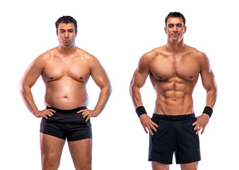
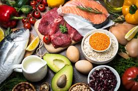
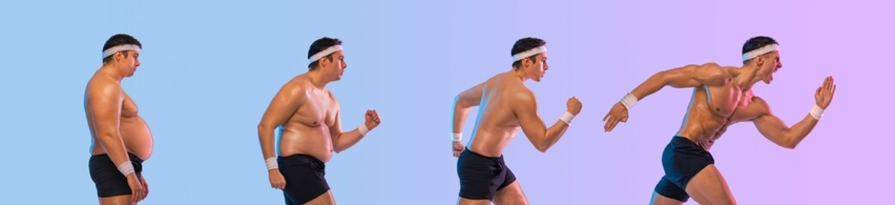
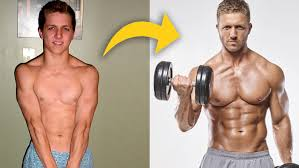
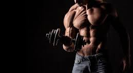

transformation plan
Transformation plan-ka waa qorshe dhameystiran oo kaa caawinaya inaad jirkaaga
si tartiib ah oo caafimaad leh u beddesho. Waxa uu ka kooban yahay cunto qorsheysan
, tababaro gaar ah (fitness), iyo taageero maskaxeed si aad u gaarto natiijo dhab ah.
Waxaa loogu talagalay qof kasta – ha ahaado mid caato ah oo raba inuu murqo dhisto ama
mid buurbuuran oo raba inuu miisaanka dhimo.
Qorshahaan wuxuu ku tusayaa talaabo talaabo waxa aad sameyso si aad u gaarto jirka aad rabto.
Fadlan xogta halkaa aan kugu so gudbinayo waa mid free ah.hadii aad rabtid si dhameystiran
inan ku siyo strategies and tactics waa PREMIUM,khidmada waa $10 bishii,si aad isku diwangaliso
guji buttonka hose.
From obese to fit
- Qorshe Cunto Caafimaad Leh:

- Iska yaree sonkorta iyo cabbitaannada macaanka leh (sida sodas & juice-yada)
- Cun khudaar iyo cunto dabiici ah (salad, basbaas, karootada, iwm)
- Ka fogaaw cuntooyinka shiilan (deep fried) iyo fast food
- Kordhi borotiinka (hilib, kalluun, digir, ukunta) si aad u dhisto murqo
- Cun cabbir sax ah (portion control), adigoo isticmaalaya saxan yar
- Hurdo Fiican Qaado
- Ku seexo 7–9 saacadood habeenkii
- Seexashada habeenku waxay taageertaa dhimista miisaanka
- Ka fogow taleefan, TV ama shaashado saacado ka hor seexashada
- Cab Biyo Badan
- Biyaha waxay yareeyaan gaajada beenta ah
- Waxay nadiifiyaan jirka oo tamar siiya
- Cab ugu yaraan 2–3 litir maalintii
- La Soco Horumarkaaga
- isku miisaan maalin ama usbuuc walba (laakiin ha ka niyad jabin isbeddel yar)
- Qor cuntooyinka aad cunto iyo tababarada aad samayso
- Iska qaad sawir bil kasta si aad isbarbardhigto
Bilaaw Tababar Fudud oo Joogto ah
Jadwal Tababar Usbuucii
Maalin tababar sharraxaad sabti Socod + Tababar Jilicsan 30 daqiiqo socod + 15 daqiiqo squats, wall push-ups, leg lifts Axad Cardio Fudud (Low Impact) 20–30 daqiiqo: marching in place, step-ups, arm circles Isniin Nasasho ama Yoga Fudud Nafis & laab-laab: 20 daqiiqo stretching ama video yoga for beginners Talaado Strength Training (Core & Legs) Squats, glute bridges, seated leg raises – 3 sets x 10–12 repetition Arbaco Socod Degdeg ah 30 daqiiqo socod degdeg ah (ama baaskiil tartiib ah haddii suurtagal) Khamiis Nasiino Jimco Nasiino
From skinny to jacked
- Cunto (Nutrition Plan):
- Cunto badan (calories surplus): Cun wax ka badan inta jidhkaagu gubo maalintii.
- Borotiin badan: Hilib, ukumo, kalluun, digir, caano — 150g+ maalintii haddii aad tababar sameyso.
- Carbs xoog leh: Bariis, baasto, rooti, baradho – waxay kaa siiyaan tamar tababarka.
- Dufan caafimaad leh: avocados, lows, saliid saytuun.
- Cun 4–5 jeer maalintii: 3 cunto weyn + 2 snack ah (milkshake, moos + peanut butter, iwm)
- Hurdo (Sleep = Muscle Growth)
- Ku seexo 7–9 saacadood habeenkii
- Seexashada habeenku waxay taageertaa dhimista miisaanka
- Seexashada fiicani waxay saameyn ku leedahay hormoonnada koritaanka (growth hormone).
- Cab Biyo Badan
- Biyaha waxay yareeyaan gaajada beenta ah
- Waxay nadiifiyaan jirka oo tamar siiya
- Cab ugu yaraan 2–3 litir maalintii
- La Soco Horumarkaga
- isku miisaan maalin ama usbuuc walba (laakiin ha ka niyad jabin isbeddel yar)
- Qor cuntooyinka aad cunto iyo tababarada aad samayso
- Iska qaad sawir bil kasta si aad isbarbardhigto
Bilaaw Tababar Joogto ah
Jadwal Tababar Usbuucii
Maalin tababar sharraxaad sabti Upper Body Strength Push-ups, dumbbell shoulder press, tricep dips, bicep curls – 3 sets Axad Legs + Core Workout Squats, lunges, calf raises, leg raises, planks – 3 sets Isniin Nasasho ama Stretching 20 daqiiqo yoga/stretching, hurdo fiican si murqaha u koraan Talaado Full Upper Body Pull-ups (ama alternative rows), incline push-ups, dumbbell rows Arbaco Cardio + Abs 10–15 daqiiqo jogging + sit-ups, bicycle crunches, leg raises Khamiis Nasiino Jimco Nasiino